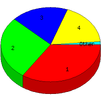

Week of 7/26/2009 to 8/1/2009: Top
5 of
5 File Types (Extensions)
Sorted by Access Count
Individual file types as determined by file extensions. All URLs that
do not contain an extension are counted as directories.

| Rank |
Type |
Accesses |
% |
Bytes |
% |
| 1 |
jpg
|
75 |
34.56 |
1,775,571 |
66.72 |
| 2 |
htm
|
60 |
27.65 |
212,707 |
7.99 |
| 3 |
gif
|
40 |
18.43 |
575,101 |
21.61 |
| 4 |
Directory (folder)
|
39 |
17.97 |
97,125 |
3.65 |
| 5 |
css
|
3 |
1.38 |
780 |
0.03 |